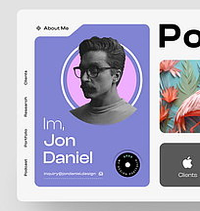

Personal site · Daniel
Designer, maker and part-time pixel perfectionist — selected web, brand and product work with room to play.

Selected work
Playground
Generative bits that didn’t behave.
Short posts on craft and tools.
Plugins and small utilities.